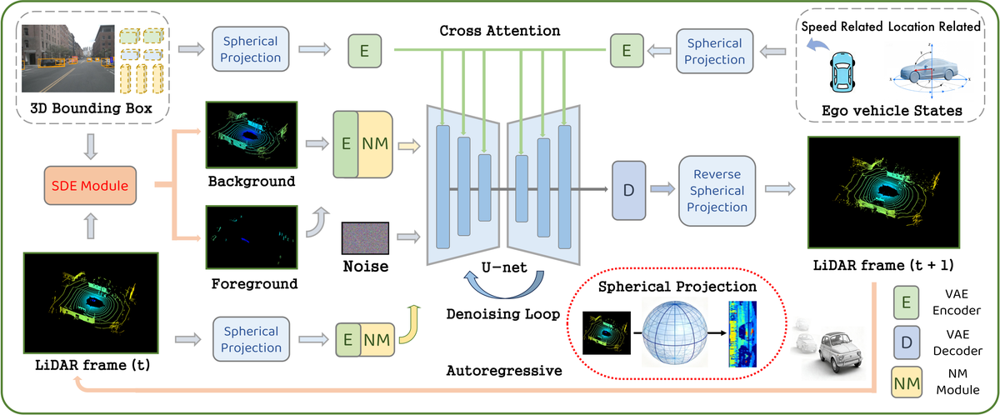

LaGen：迈向自回归 LiDAR 场景生成
简单摘要
激光雷达是自动驾驶系统的核心传感器，能够提供精确且丰富的三维几何信息。然而激光雷达数据生成研究仍较为有限——现有生成方法主要聚焦于学习数据集的整体分布，仅能合成单帧非序列的激光雷达点云，无法满足自动驾驶领域对时间连续场景的实际需求。LaGen探索了基于激光雷达的生成式世界模型，提出自回归的激光雷达点云生成框架，能够仅依据单帧起始输入逐帧生成高保真度的长时序激光雷达场景。首先利用球面投影将三维点云转换为更紧凑的距离图像表示，提升计算效率并适配扩散模型。基于隐空间扩散模型构建高保真数据生成器，通过多种控制条件引导扩散过程。设计场景解耦估计模块为模型提供实时物体级估计以增强空间一致性，引入噪声调制模块降低模型对历史帧的过度依赖以缓解自回归的误差累积。

核心创新
提出自回归式激光雷达场景生成框架LaGen，仅需单帧历史输入即可逐帧生成长时序高保真激光雷达场景。利用球面投影将三维点云压缩为距离图像，显著提升计算效率同时保留关键几何结构。设计场景解耦估计模块实时提供物体级场景估计。提出噪声调制策略通过向历史条件注入噪声使模型适应推理阶段的不完美输入，有效遏制自回归过程中的误差累积。
技术细节
距离图像通过将 3D 空间中的非结构化点云参数化为 2D 像素空间，提供 LiDAR 数据的紧凑表示。然后解码器将潜在图像作为输入并生成重建的距离图像。作者这样设计，是为了把这一节的输入、约束和输出关系讲清楚。
在我们的框架中，该生成器被实例化为潜在扩散模型，它可以在扩散过程中整合多种形式的条件信息，以生成时空一致的序列。多条件控制生成过程前一帧的激光雷达数据。使用前一帧的激光雷达点云作为生成过程中的控制条件之一对于赋予生成器自回归推理能力至关重要。这一步的作用，是把当前结果继续传给后面的模块或训练目标。
3 方法
距离图像通过将 3D 空间中的非结构化点云参数化为 2D 像素空间，提供 LiDAR 数据的紧凑表示。然后解码器将潜在图像作为输入并生成重建的距离图像。作者这样设计，是为了把这一节的输入、约束和输出关系讲清楚。
在我们的框架中，该生成器被实例化为潜在扩散模型，它可以在扩散过程中整合多种形式的条件信息，以生成时空一致的序列。多条件控制生成过程前一帧的激光雷达数据。使用前一帧的激光雷达点云作为生成过程中的控制条件之一对于赋予生成器自回归推理能力至关重要。这一步的作用，是把当前结果继续传给后面的模块或训练目标。
3.1 预赛
距离图像通过将 3D 空间中的非结构化点云参数化为 2D 像素空间，提供 LiDAR 数据的紧凑表示。然后解码器将潜在图像作为输入并生成重建的距离图像。作者这样设计，是为了把这一节的输入、约束和输出关系讲清楚。
$$ \begin{aligned} r &= \sqrt{x^{2} + y^{2} + (z - h_{j})^{2}}, \\ \theta &= \arctan(y, x), \quad \phi = \phi_{j}, \end{aligned} $$
放在“方法”这一部分看，这条式子重点不是孤立地罗列符号，而是交代 r 如何承接前面的输入并把结果交给后续步骤。
$$ u = W - ((\theta + \pi) / 2\pi) \cdot W, \quad v = H - j, $$
放在“方法”这一部分看，这条式子重点不是孤立地罗列符号，而是交代 u 如何承接前面的输入并把结果交给后续步骤。
$$ \mathcal{L}_{\text{LDM}}=\mathbb{E}_{\epsilon_{t} \in \mathcal{N}(0,1), t \in \mathcal{U}[0, T], c}[\| \epsilon_{t}-\epsilon_{\theta}(z_{t} ; t, c)\| ^{2}], $$
这条式子给出了噪声预测训练目标：模型在随机时间步接收带噪输入和条件信息，然后尽量把真实噪声估计准确。训练好这一项之后，反向采样时才能稳定地把噪声状态一步步拉回真实场景分布。
3.2 总体框架
给定驾驶场景的第一帧 LiDAR 数据，我们的目标是根据自我车辆的实际运动递归生成后续 LiDAR 帧。在自动驾驶模拟器中，可以跟踪驾驶场景每一帧的以下信息。作者这样设计，是为了把这一节的输入、约束和输出关系讲清楚。
3.3 时空强一致的 LiDAR 场景生成器和推理框架
为了实现自回归 LiDAR 场景生成，一个关键要求是设计一个能够生成具有强时间相干性的 LiDAR 数据的生成器。在我们的框架中，该生成器被实例化为潜在扩散模型，它可以在扩散过程中整合多种形式的条件信息 lazy' decoding='async' />
3.3.1 多条件控制生成过程
使用前一帧的激光雷达点云作为生成过程中的控制条件之一对于赋予生成器自回归推理能力至关重要。随后，我们通过交叉注意力机制注入 UNet 的多个层。通过利用多种控制条件来指导去噪过程，潜在扩散模型可以 alt='Figure 3:' loading='lazy'lazy' decoding='async' />
alt='Figure 3:' loading='lazy'lazy' decoding='async' />
$$ E_{\text{rel}}^{s-1} = (E_{\text{ego2glb}}^{s} \cdot E_{\text{li2ego}}^{s})^{-1} \cdot (E_{\text{ego2glb}}^{s-1} \cdot E_{\text{li2ego}}^{s-1}), $$
这条式子是在定义一个可直接计算的中间量：右侧把相对位置、方向、权重或比例关系组合起来，左侧则把这个组合结果记成后续模块要反复使用的变量。
$$ \hat{z}^{s-1} = FiLM(z^{s-1}, E_{\text{rel}}^{s-1}), $$
这条式子把前面若干观测、条件或中间特征，经过一个显式模块映射成新的状态变量。它的意义在于把复杂流程压缩成清晰的函数接口，方便后续模块继续消费这个中间结果。
$$ q = H_{B}, \quad k = H_{B}^{\text{prev}},\quad v = H_{B}^{\text{cur}}, $$
放在“方法”这一部分看，这条式子重点不是孤立地罗列符号，而是交代 q 如何承接前面的输入并把结果交给后续步骤。
3.3.2 场景解耦估计
该模块将前一帧的激光雷达场景解耦为前景（例如车辆和行人）和背景部分。然后，我们将所有内容聚合以获得当前场景中前景点云的估计。值得注意的 1256v1/figure4_full.png' alt='Figure 4:' loading='lazy'lazy' decoding='async' />
$$ P^{s-1}_{\text{obj}}=\{p_{ij}\},i \in\{1,2,...,D\}, j \in\{1,2,...,K_i\}, $$
放在“方法”这一部分看，它重点在定义或约束 P s-1 obj 这一项。这条式子是在定义一个可直接计算的中间量：右侧把相对位置、方向、权重或比例关系组合起来，左侧则把这个组合结果记成后续模块要反复使用的变量。
$$ \hat{p}_{ij}^{s-1} = trans(P_{ij}^{s-1}, E_{\text{rel}}^{s-1} ), $$
放在“方法”这一部分看，它重点在定义或约束 p ij s-1 这一项。这条式子把前面若干观测、条件或中间特征，经过一个显式模块映射成新的状态变量。它的意义在于把复杂流程压缩成清晰的函数接口，方便后续模块继续消费这个中间结果。
$$ \widetilde{p}_{ij}^{s} = \hat{p}_{ij}^{s-1} + (C_{ij}^{s} - C_{ij'}^{s-1}), \quad i \in\{1,2,...,D\}. $$
放在“方法”这一部分看，它重点在定义或约束 widetilde p ij s 这一项。这条式子是在定义一个可直接计算的中间量：右侧把相对位置、方向、权重或比例关系组合起来，左侧则把这个组合结果记成后续模块要反复使用的变量。
$$ \widetilde{P}^{s}_{\text{bg}} = trans(P^{s-1}_{\text{bg}}, E_{\text{rotate}}^{s-1}). $$
放在“方法”这一部分看，它重点在定义或约束 widetilde P s bg 这一项。这条式子是在定义一个可直接计算的中间量：右侧把相对位置、方向、权重或比例关系组合起来，左侧则把这个组合结果记成后续模块要反复使用的变量。
3.3.3 噪声调制模块和误差累积缓解
围绕 3.3.3 噪声调制模块和误差累积缓解，自回归生成依赖于前一帧的信息，通常会导致训练推理差异。为此，我们设计了一个模块来减轻错误累积并增强长范围生成中的时间一致性。该模块的核心思想是在前一帧图像中注入不同级别的随机噪声，从而减少模型对其的过度依赖。作者这样设计，是为了把这一节的输入、约束和输出关系讲清楚。
| Method | Input | Chamfer Distance (m^2) | ||||||||||
|---|---|---|---|---|---|---|---|---|---|---|---|---|
| (l3ptr3pt)3-13 | frames | 0.5s | 1.0s | 1.5s | 2.0s | 2.5s | 3.0s | 3.5s | 4.0s | 5.5s | 7.5s | 9.5s |
| 4D-Occ | 2 | 1.15 | 1.61 | 1.84 | 2.15 | 2.56 | 3.10 | 4.30 | 6.24 | 12.30 | 25.11 | 55.47 |
| 4D-Occ | 6 | Lavender 1.00 | Lavender 1.19 | Lavender 1.33 | Lavender 1.48 | Lavender 1.64 | Lavender 1.85 | 2.41 | 3.49 | 7.73 | 12.82 | 21.08 |
| ViDAR | 2 | 1.15 | 1.36 | 1.56 | 1.75 | 1.98 | 2.22 | 2.50 | 2.81 | 3.79 | 5.18 | 6.37 |
| ViDAR | 6 | 1.14 | 1.31 | 1.47 | 1.66 | 1.86 | 2.08 | Lavender 2.30 | Lavender 2.54 | Lavender 3.25 | Lavender 4.12 | Lavender 5.06 |
| LaGen | rowgray1 | LightPink 0.50 | LightPink 0.61 | LightPink 0.71 | LightPink 0.81 | LightPink 0.92 | LightPink 1.08 | LightPink 1.22 | LightPink 1.32 | LightPink 1.73 | LightPink 2.14 | LightPink 2.66 |
3.3.4 用于自回归 LiDAR 场景生成的逐帧推理框架
场景解耦估计模块提供的当前帧估计的前景和背景点云的距离图像。同时，在推理过程中，SDE模块也会根据生成的数据进行计算。与训练阶段一致，在推理过程中，NM 模块还会向这些数据添加不同级别的噪声。作者这样设计，是为了把这一节的输入、约束和输出关系讲清楚。
| Method | Years | MMD | JSD |
|---|---|---|---|
| LiDARGen | ECCV'22 | 5.89 | 9.66 |
| LiDM | CVPR'24 | 3.32 | 6.75 |
| RangeLDM | ECCV'24 | 1.92 | 5.47 |
| LaGen | - | 0.35 | 3.97 |
实验结论
实验设置
**数据集。** 在大规模公开nuScenes数据集上进行实验，包含1000个自动驾驶序列。训练集约297737个LiDAR扫描，验证集约52423个扫描，每个扫描32线束。
**评估指标。** LiDAR数据生成器评估采用Maximum Mean Discrepancy (MMD)和Jensen-Shannon Divergence (JSD)。自回归生成精度评估采用Chamfer Distance (CD)以及两个基于射线深度的误差指标。
LiDAR数据生成器性能
LaGen在两个LiDAR数据生成关键指标上均超越基线模型，验证了生成器设计的有效性。
长时域LiDAR场景生成
为评估长时域生成构建了基于nuScenes的评估协议：将数据集划分为10秒的序列场景段，得到176个有效场景，每个含20帧连续LiDAR帧。与多个SOTA预测模型对比，LaGen展现出显著优势：预测方法在长时域下误差累积严重，而LaGen通过SDE模块和NM模块有效缓解了这一问题。
交互式生成能力
LaGen逐帧生成场景，可在任意中间帧编辑场景中物体的位置。演示了通过移动或移除车辆对应边界框进行的交互式生成：移动其他车辆后LaGen精确恢复该物体新位置造成的遮挡效果；移除车辆后LaGen成功补全原被遮挡的道路部分。
消融实验
SDE模块在一定程度上提升预测精度，NM模块能显著缓解长时域LiDAR场景生成中的误差累积问题。
结论
LaGen是一种新颖的自回归逐帧生成长时域LiDAR场景的框架。开发了以驾驶场景中多种控制条件为条件的LiDAR数据生成器，并通过SDE和NM模块增强长时域生成的时空一致性。
理解评价
如果把这篇论文放回问题背景里看，它真正的价值在于：为此，我们引入了 LaGen，据我们所知，它是第一个能够逐帧自回归生成长视距 LiDAR 场景的框架。这说明作者不是只补一个局部模块，而是在重新组织问题该怎样被解决。
最能支撑这个判断的，还是实验给出的证据：此外，我们引入了场景解耦估计模块来增强模型对对象级内容的交互生成能力，以及噪声调制模块来减轻长视野生成过程中的错误累积。换句话说，这些设计并不只是概念上更完整，而是实实在在改变了最终结果。
当然，它离真正成熟的方案还有距离：当前方案的主要局限在于它仍然受到计算资源、输入质量或场景复杂度的约束，离真正大规模稳定部署还有距离。后续更值得继续推进的方向，是 未来，我们期望LaGen在闭环仿真、世界建模等应用中发挥重要作用，从而推动自动驾驶的发展。